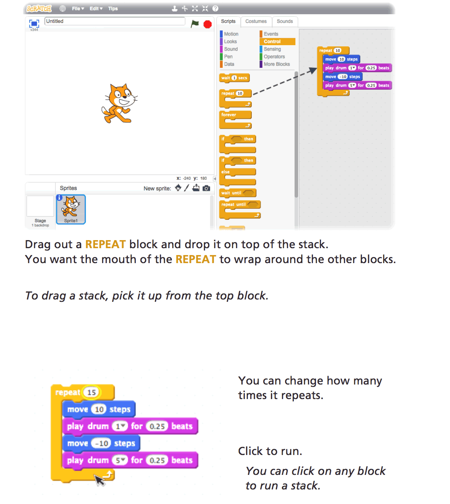
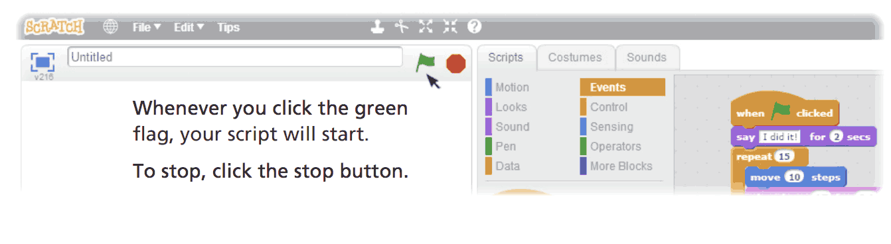

What is Programming?
When you hear the word "Programming" does a picture like this come into your mind?

Well thats one way to think about it, but in reality programming is a lot more than long lines of code.
Programming is the process of giving a computer a series of instructions, or in other words, telling a computer what to do, and how to do it.
You can give a computer instructions by typing code like the picture above, or you can give it instructions by dragging and dropping blocks, like the picture below.

What you see above is an example of a programming language called Scratch!
Scratch is a free visual programming language developed at MIT Media Labs to help simplify the process of creating and programming animations, games, music, interactive stories and more.
Users program in Scratch by dragging blocks from the block palette and attaching them to other blocks like a jigsaw puzzle. Structures of multiple blocks are called scripts. This method of programming (building code with blocks) is referred to as "drag-and-drop programming".
In the next step, we will start programming with scratch and eventually develop a small game called "Pong" using scratch!
Create a Scratch account
Head to https://scratch.mit.edu/ and sign up for an account on MIT’s website by clicking Join Scratch atop the page. Any username (that’s available) is fine, but take care to remember it and your choice of password.
Create a new project
Once you have created your account, click on the Create button on the top bar on the scratch website. Next click on the Sign In button on the top right, in the window that opens, and login with the account you created in the previous step. This will ensure that you can save your project and get back to it, if you happen to close the window.
Making the cat move!
Now, we'll add a few more blocks to make our cat dance to a simple drum beat. Follow the steps below:

If you followed these steps correctly, you should now have a cat that can dance, albeit not gracefully. We'll now make the cat dance, when ever the green flag is clicked in scratch.

Review
With a basic version of a cat dance complete, lets review what we've covered so far.
- Motion - We covered how to use the move block to make our object(cat) move a given number of steps
- Sound- We added basic sounds to play for a given number of beats.
- Control - We used the repeat block to repeat a set of blocks over and over again.
- Events- We added the When green flag clicked event to make our cat dance when the green flag is clicked.
Lets turn our attention to the repeat block. This idea of repeating a set of instructions over and over again, is called Iteration. It turns out, that computers are really good at doing things over and over again, and that is a property, that programmers often exploit, to make the computer do things that would just be too time consuming for humans. For example, calculating the result of an expression like 2 raised to the power 100. While to do this manually, would take us a lot of time, computers can do this very quickly, and produce results, almost instantly. This is because they are so good at repeating things, and remembering results.
The last thing we did, was to add the when green flag clicked block. This is an example of Event-Driven programming. Where the occurrence of an event, in this case clicking the green flag, drives some set of actions. This concept is often employed in interactive applications, where the actions of the user, determine what happens next in the application.
In the next step, we will develop, a small game using Scratch, that will illustrate a few useful concepts in the world of programming.
Head over to Pong Activity on Scratch's website, and follow the tips on the right column,
to implement a basic version of a Pong game.(After you have read through this page ofcourse.)
If you are unfamiliar with the game, the end result of what you will implement (we know it's not perfect) looks something like this:
Click on the green flag to start. Move the green paddle to touch the ball, and thus prevent the ball from falling into the red bottom.
This activity will introduce you to another important programming concept: Branching We'll get to that in a moment.
To implement this activity, you will use a block that looks like:
This is an if block from the "Control" category. To use it, you will fill in the hexagon, with a conditional block (either from operators or sensing categories). The blocks inside the if block, will only be run if the condition is true/satisfied. For Example:
In the above example, the cat will move, only if the space bar is pressed. Now this concept of running a few blocks based on a condition is called branching. Where the normal flow of a program can be altered depending on some condition/clause.
Now proceed to implement the Pong Activity (link given above). (Try enhancing and customizing the game with your creativity!).
Now that you have implemented a basic game, you are in a position to take on some more advanced concepts.
Click Here to follow a series of steps to create a Hide and Seek Game on Scratch (Much like the sequence for Pong).
You are now at a position to take on scratch on your own, and create your own projects, using the full power of scratch. In order to give you some inspiration, check out the examples below to know to an extent the possibilities with Scratch.
Pikachu’s Pastry Catch by Gabe Walker! Click the green flag and then, per Gabe’s instructions, hit your keyboard’s space bar, at which point the game will begin!
If curious, Gabe’s source code can be seen at http://scratch.mit.edu/projects/26329354/ by clicking the See Inside Button.
Oscartime by Jordan Hayashi!
Jordan’s source code can be found at https://scratch.mit.edu/projects/71161586/.
Now that you have seen a few examples, use the remaining time of this codelab and more if you so desire, to build any scratch application of your choice, and demonstrate it to any hour of code volunteer.
You can now call yourself a Programmer! By now, you have successfully learnt a few concepts of Programming, and should have got an idea, as to what are the kinds of instructions we can give to computers, to make them work the way we want. So far, We've covered:
- Iteration
- Branching
- Concept of event-driven programming
- Variables and operations (in Hide and Seek)
While this isn't an in-depth introduction to scratch, we hope it will has given you an insight into the world of Scratch, and Programming. We encourage you to check out other projects at https://scratch.mit.edu/ and check out their source codes. All the best!